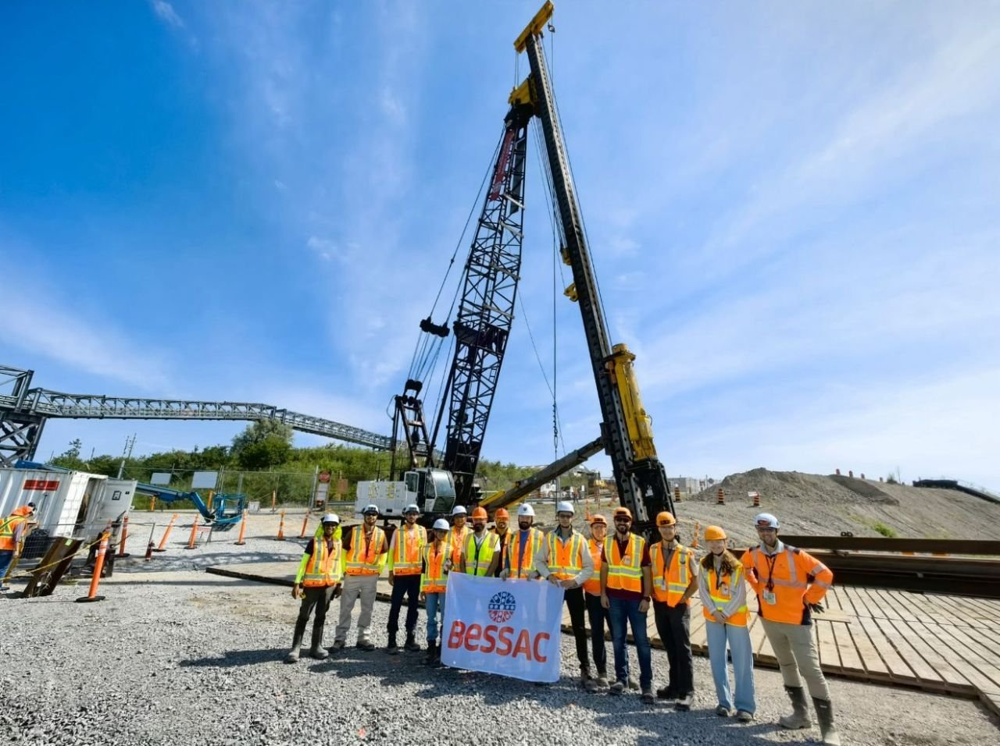
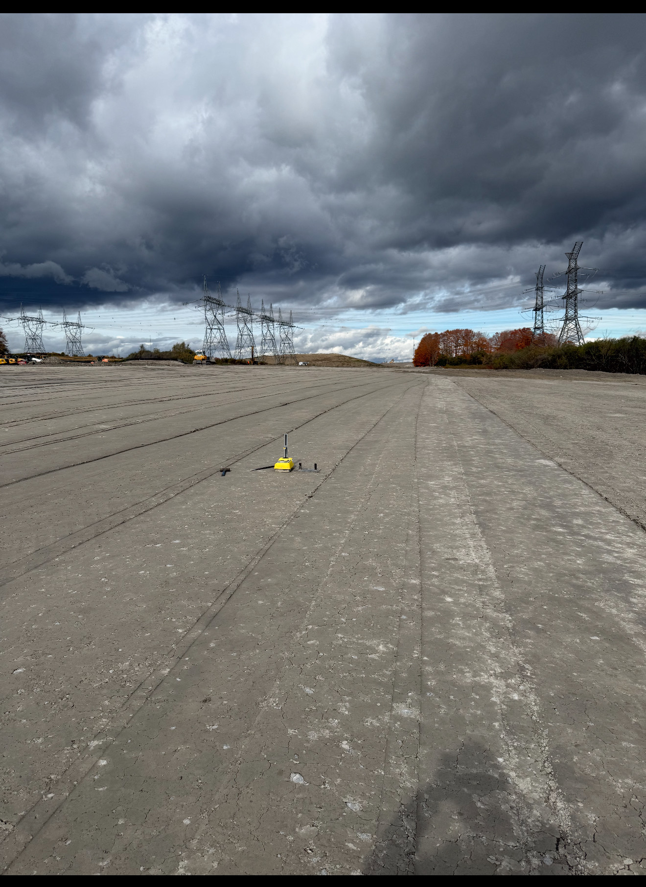
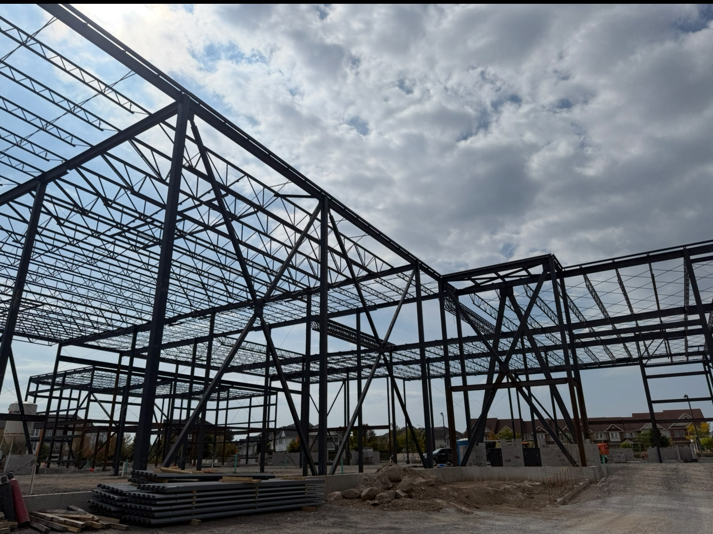
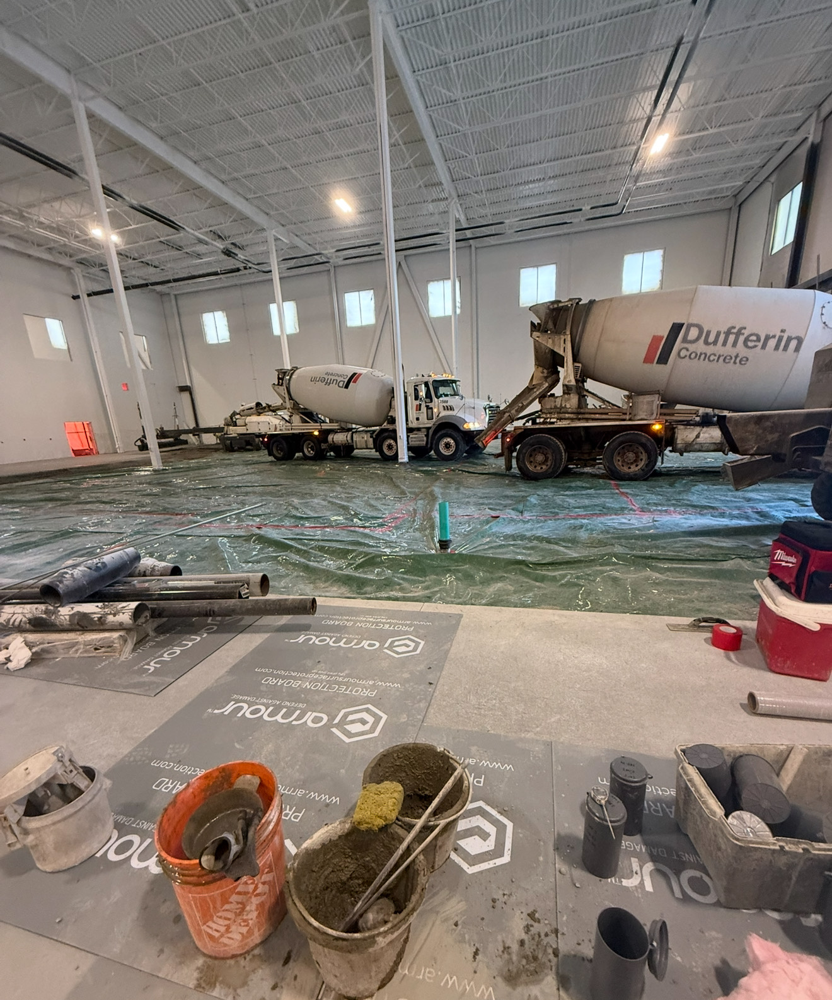
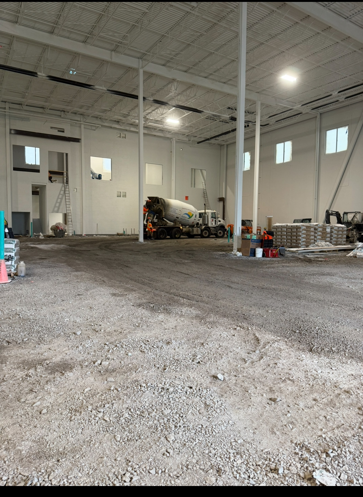
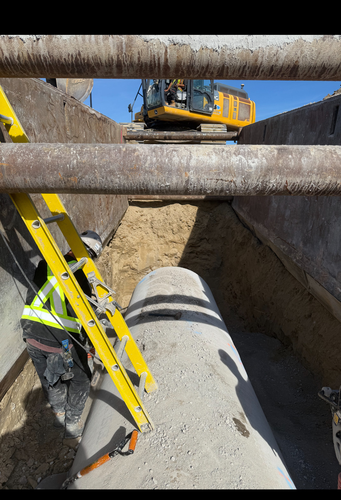
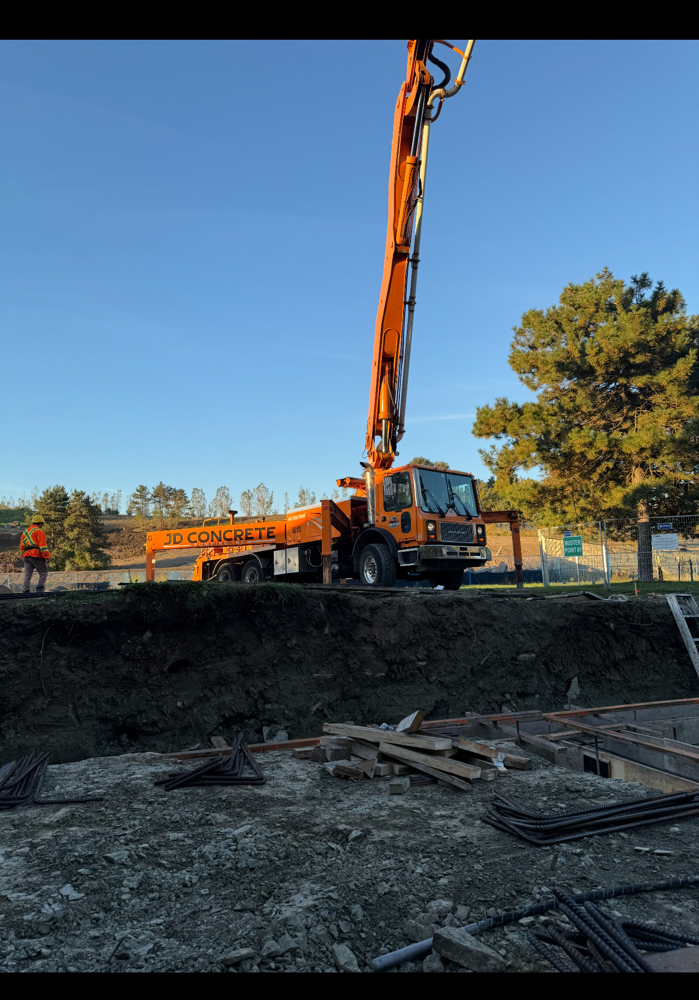
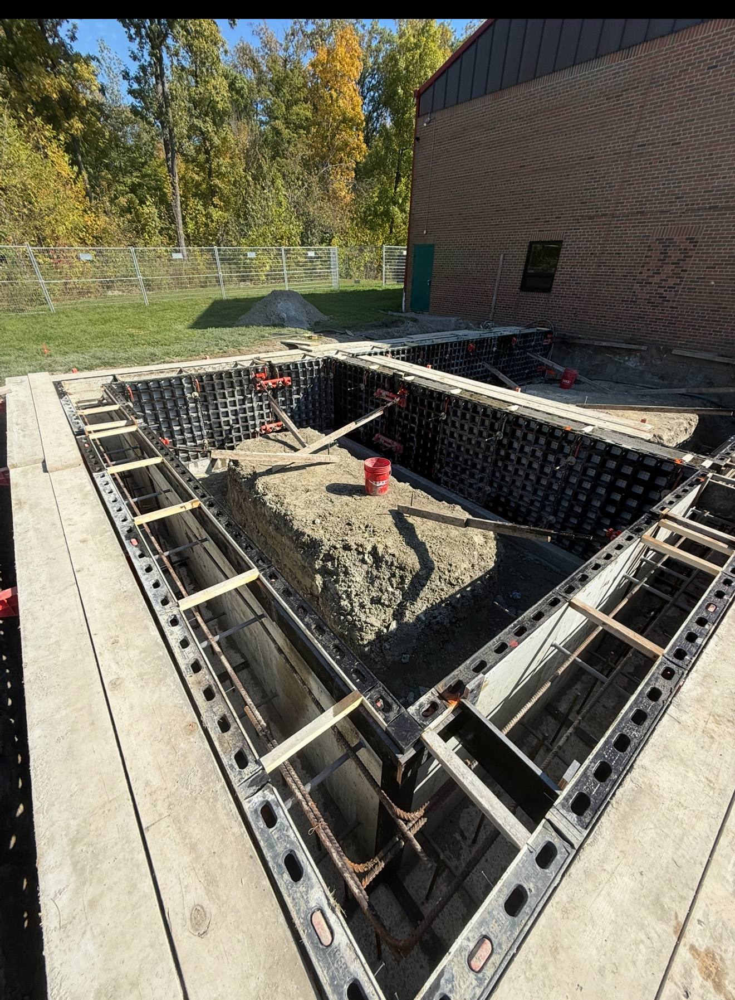
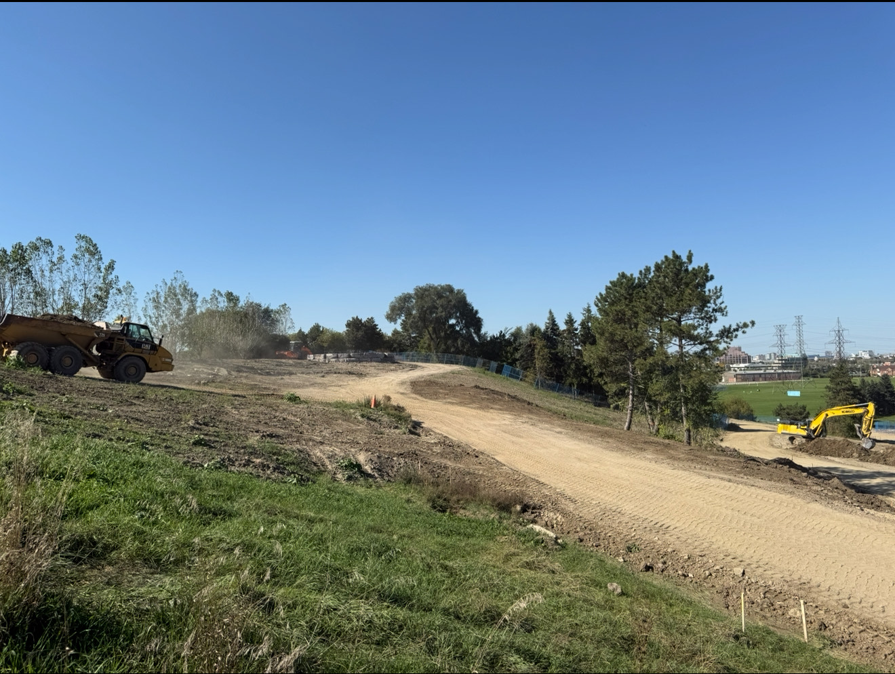

Field Experience

OPG Deep Water Intake: Pickering Refurbishment Program
Field Engineer with Vinci Construction, Jun–Aug 2026. Temporary works, Platform Construction, Deep Foundation Installation, Abutment Preparation, and close coordination between subcontractors and OPG client personnel.
- Pile monitoring and QA: set up a repeatable survey method for position, rotation and heave on driven HP piles (OPSS 903). Gathering data that was sent to EORs for as-built position of piles.
- Corrective action reporting: drafted CARs issued to OPG for pile deviations and vibration monitoring alarms, including root cause and preventive actions, reviewed by my supervisor and issued by my manager.
- Design interface review: Worked closely with supervisors and managers to confirm constructability across 3 designers, updating design revisions for the on-site team, and putting forward solutions to design interface issues.
- Documents and planning: submittal register (50+ items), Aconex revision checks, scopes of work for launch shaft, upshaft and Main I&M packages, and a three-week lookahead issued to OPG around site security access.
- Site coordination: supported five temporary platforms and two mass concrete pours; introduced a daily midday coordination meeting with ~30 subcontractor staff; tracked 5,000+ m³ of excavation and 3,500 m³ of backfill to be used by internal scheduling team for progress curves.

Darlington SMR (Holt Switching Station)
- Technical liaison for earthworks and compaction to nuclear project specifications.
- Investigated occurrences regarding failing compaction results (moisture vs. optimum, Proctor target densities) and recommended corrective steps.
- Prepared daily compaction reports for supervisor review and issue to Aecon and Hydro One.



Smart Flexible Packaging Facility
- Assisted with structural steel inspections, verifying steel positioning against IFC drawings.
- Coordinated QA/QC for over 500 m³ of concrete placement, including technical reporting.
- Checked field work against industrial specifications and safety standards.




Centennial Park Master Plan
Field inspections and density testing for geotechnical stability, rebar and concrete placement inspections, and field reports tracking compliance through construction.